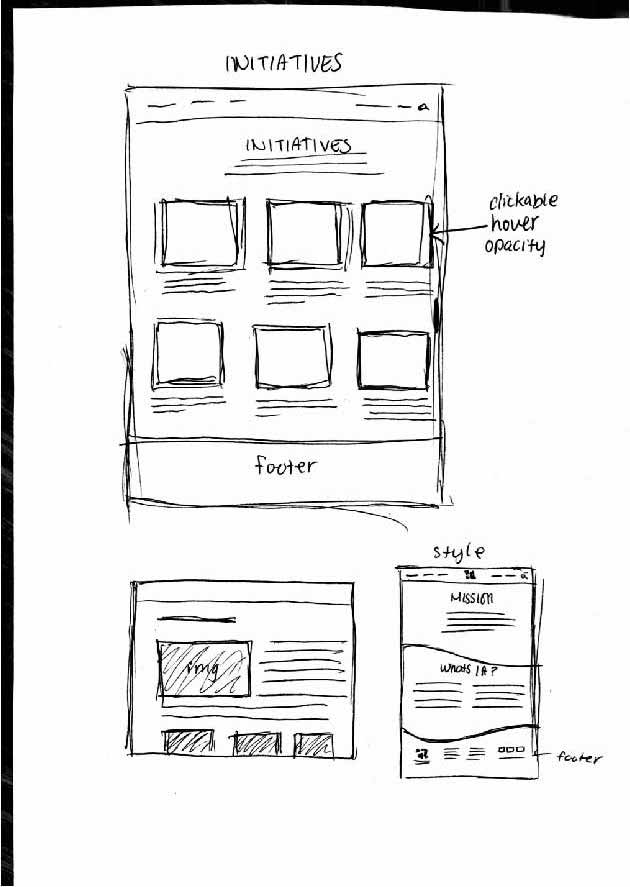

For my paper protoype I wanted to show the flow from page to page when a menu item is clicked on. When the mouse hovers over, I wanted to show that there is a drop down menu that provides subctegories to' 'About.' When 'Mission' is clicked, it will take the user to new page where the Mission statement of Imagining America is at the top and below is tells you who they are as an organization. When the user scrolls all the way down, there is a footer with the contact information fixed at the bottom of all the pages for added consistancy. The IA logo at the top of the menu acts a direct link back to the landing page where the user can further explore each element. I also showed the events page where IA can display upcoming public events in addition to promoting the National Gathering. The National Gathering has its own own page as to highlight it's importance. There is a register button in addition to traveling information below. I also wanted to highlight the 'Initiatives' page the shows projects that IA hosts. It will be linked under 'Engage' becuase we want users to see what types of projects that they offer.
